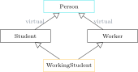

Definition
struct Person { std::string name; };
struct Student : virtual Person { int year; };
struct Worker : virtual Person { int seniority; };
struct WorkingStudent : Student, Worker {
// the most derived class builds Person
WorkingStudent(std::string n) : Person{n} {}
};- Without
virtual,WorkingStudenthas twoPersonsubobjects:ws.nameis ambiguous (ws.Student::namevsws.Worker::name) and aWorkingStudent*cannot convert toPerson*unambiguously. - With virtual inheritance there is one
Person; access goes through an extra indirection (virtual base pointer). - Two bases declaring the same member function: the call is ambiguous until the derived class overrides it or qualifies it (
Student::print()).
Picture

The diamond: with virtual the two paths lead to one shared Person.
Java's answer
Java forbids multiple inheritance of classes and allows multiple interfaces. Since Java 8 default methods reintroduce a mild diamond: if two interfaces provide the same default method, the class must override it (and may call A.super.m()).
Intuition
Inheriting from two parents that share a grandparent: do you want two copies of the grandparent's data or one? virtual is how you answer "one".
Pitfall
Virtual bases are constructed by the most derived class only: the Person initialisers written in Student and Worker are ignored when building a WorkingStudent, which surprises everyone once.